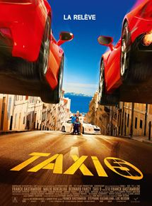
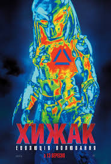
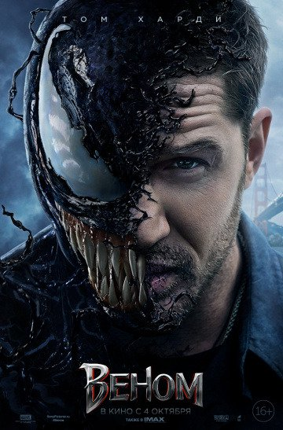

Таксі 5

- Назва: Такси 5 / Taxi 5
- Режисер: Франк Ґастамбід
- Актори:Сабріна Уазані, Бернар Фарсі, Франк Ґастамбід, Малік Бенталья, Сальваторе Еспозіто, Едуар Монтут, Санд Ван Рой, Рамзі Бедіа, Івонн Граделе, Мусса Мааскрі
- Студія: EuropaCorp
- Прем’єра: 07.04.2018
- Тривалість: 102 хв
Опис:
Легендарне біле Peugeot повертається на дороги Марселя. У його екіпажі буде племінник легендарного водія Даніеля. Він жахливий водій, абсолютно не пішов в свого дядька, тому тільки сидить на пасажирському сидінні і боїться за своє життя. Місто почали тероризувати нові італійські бандити на Ferrari та Lamborgini. Він повинен зловити разом з Сільвеном Маро цих розбійників на надшвидкісних машинах. Чи вийде у цих невдалих ловців бандитів піймати своїх жертв за допомогою марсельських жандармів під проводом комісара Жибера? Це буде складно і допоможе їм тільки багато удачі та велика швидкість.
Хижак

- Назва: Хижак / The Predator
- Режисер: Шейн Блек
- Актори: Бойд Голбрук, Олівія Манн, Треванте Роудс, Джейкоб Трембле, Кіґан-Майкл Кі, Стерлінг К. Браун, Томас Джейн, Елфі Аллен, Івонн Страховскі, Августо Агілера
- Студія: 20th Century Fox, Davis Entertainment, TSG Entertainment
- Прем’єра: 07.09.2018
- Тривалість: 107 хв
- Назва: Веном / Venom
- Режисер: Рубен Флейшер
- Актори: Том Гарді, Мішель Вільямс, Дженні Слейт, Різ Ахмед, Вуді Гаррельсон, Том Голланд
- Студія: Sony Pictures, Columbia Pictures, Marvel Entertainment
- Бюджет: 140 млн. дол. США
- Прем’єра: 04.10.2018
- Тривалість: 140 хв
Опис:
Полювання ніколи не було таким небезпечним для жертв... Із далеких куточків космосу на Землю прибули інопланетні монстри, які вміють тільки вбивати. Їх звуть Хижаки, і про мирні договори вони ніколи не чули. Вони не збираються просто існувати – їм треба завойовувати космос. Далеко не всі знають про них. Квінн МакКенна один із тих, хто виявив Хижаків на Землі, але йому ніхто не хоче вірити. Та й те, що він знає, краще тримати в таємниці від усієї планети. Але за цей час тварюки еволюціонували – тепер у них є ідеальний Хижак, який перевершує попередніх у рази. Доля планети лежить на плечах маленького сина Квінна на ім'я Рорі, який розуміє мову прибульців.
Веном

Опис:
Людей дуже часто тягне до чогось незвичайного та незрозумілого. Ось так і репортер Едді Брок – як тільки на землі з'явився незрозумілий симбіот, його потягнуло до цієї невивченої субстанції. Хлопця просто завжди цікавить те, що заборонено владою. І вона змінила чоловіка до невпізнання - тепер у ньому живе зла сутність, яка хоче вбивати. Його звуть Веном. Одна корпорація використовує інші частини симбіота для того, щоб створювати суперлюдей. Із їх допомогою можна домогтися багато чого. Особистість Едді Брока роздвоїлась кардинально, але сила Венома має і плюси. Тільки ось впоратися з монстром дуже складно.